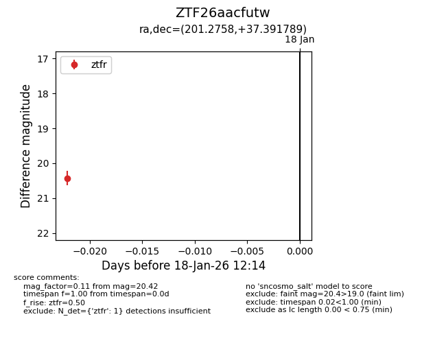
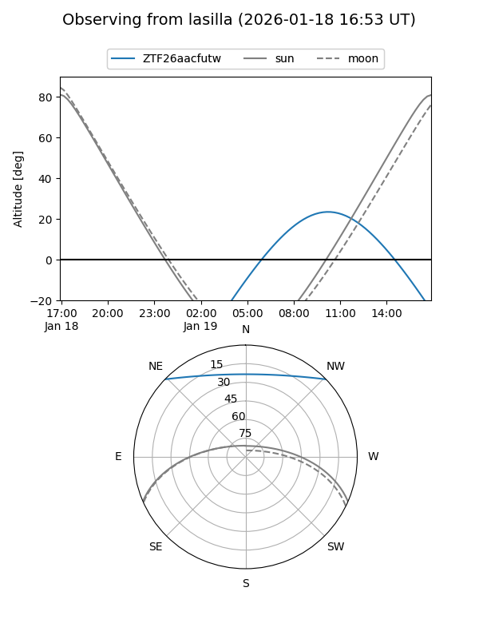
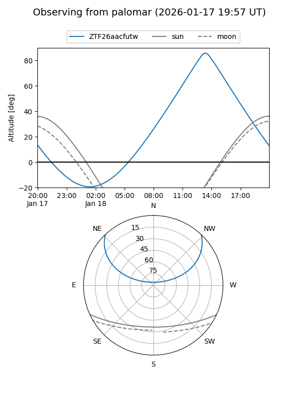
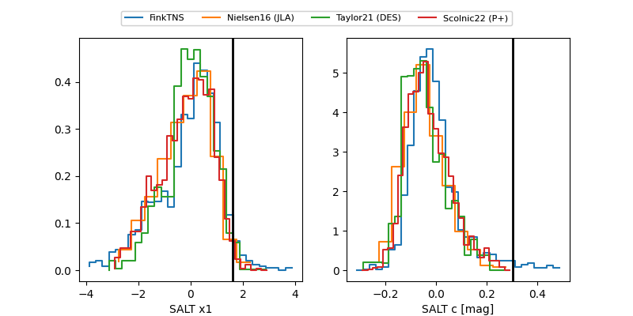

ZTF26aacfutw
Target ZTF26aacfutw at 2026-01-18 21:16
Aliases and brokers:
FINK: link
Lasair: link
ALeRCE: link
alt names
ZTF26aacfutw (ztf,fink_ztf)
Coordinates:
equatorial (ra, dec) = 201.2758,+37.39179
equatorial (HMS+DMS) = 13:25:06.20,+37:23:30.44
galactic (l, b) = (90.3668,+77.52322)
Flags:
Photometry:
last ztfr=20.42
1 ztfr detections
Lightcurve

Visibility


Additional plots
